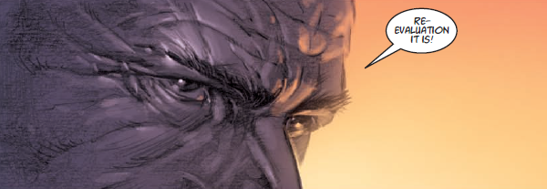

Judge Shenker is head of Justice Department's Psi-Division (following Omar) and often works closely with Anderson.
Art by Boo Cook
| Story Title | Parts | Pages | w indicates a wraparound coverCovers | Year(s) | Issues | Writer | Artist | Colourist | Letterer |
|---|---|---|---|---|---|---|---|---|---|
From Judge DreddA Chief Judge Resigns | 1 | 6 | 0 | 1986 | 457 | Alan Grant John Wagnervarious | Cliff Robinson | <-- 2pp, [b&w] | Tom Frame |
From Judge DreddNecropolis | 26 | 174 | 674: Carlos Ezquerra 685: Carlos Ezquerra 690: David Hine 691: Mick Austin 693: Mike Hadley 696: Steve Yeowell 699: Dermot Power 7 | 1990 | Reprints: M3.21‑M3.35674-699 | John Wagner | Carlos Ezquerra | <-- | Tom Frame |
From Anderson Psi Division Visions of the Dark Judges and the Sisters of Death. Judge Death appears as an internal psychic projection.Engram | 12 | 64 | 713: Mick Austin 760: Mick Austin 2 | 1991 | 712-717, 758-763 | Alan Grant David Roachvarious | David Roach | [b&w] | Steve Potter |
From Anderson Psi DivisionBaby Talk | 2 | 16 | 0 | 1992 | JDMS5 | Alan Grant Tony Lukevarious | Russell Fox | [b&w] | Ellie de Ville |
From Janus Psi DivisionWill O' the Wisp | 1 | 8 | 0 | 1993 | Reprints: M322 (supplement)WS5 | Grant Morrison | Carlos Ezquerra | <-- | Tom Frame |
From Anderson Psi DivisionPostcard to Myself | 1 | 8 | Steve Sampson 1 | 1995 | M2.73 | Alan Grant | Steve Sampson | <-- | Steve Potter |
From CabalCabal | 2 | 12 | 0 | 1995 | Reprints: M349 (supplement)M3.07-3.08 | John Freeman | Adrian Salmon | P.B. Smith | Fiona Stephenson |
From Janus Psi DivisionA New Star | 5 | 30 | 984: Paul Johnson 1 | 1996 | Reprints: M347 (supplement)980-984 | Mark Millar | Paul Johnson | <-- | Ellie de Ville |
From Anderson Psi DivisionThe Protest | 1 | 8 | 0 | 1996 | M3.14 | Alan Grant | Arthur Ranson | <-- | Steve Potter |
From Anderson Psi DivisionCrusade | 12 | 72 | 1053: Jason Brashill 1057: Dermot Power 2 | 1997 | 1050-1061 | Alan Grant | Steve Sampson | <-- | Steve Potter |
From Anderson Psi DivisionHorror Story | 6 | 30 | 1132: Greg Staples 1 | 1999 | 1132-1137 | Alan Grant | Steve Sampson | <-- | Steve Potter |
From Anderson Psi DivisionR*Evolution | 10 | 50 | 1265: Duncan Fegredo 1270: Ashley Wood 2 | 2001 | 1263-1272 | Alan Grant | Arthur Ranson | <-- | Annie Parkhouse |
From Anderson Psi DivisionWMD | 6 | 48 | 0 | 2004 | M221-M226 | Alan Grant | Arthur Ranson | <-- | Annie Parkhouse |
From Anderson Psi DivisionLock-In | 4 | 32 | 227: Garry Leach 230: Arthur Ranson 2 | 2004-2005 | M227-M230 | Alan Grant | Arthur Ranson | <-- | Annie Parkhouse |
From Judge DreddHorror in Emergency Camp 4 | 4 | 24 | 1427: Cliff Robinson 1 | 2005 | 1425-1428 | John Wagner | D'Israeli | Len O'Grady | Tom Frame |
From Anderson Psi DivisionCity of Dead | 6 | 48 | 236: Dave Taylor 1 | 2005 | M231-M236 | Alan Grant | Arthur Ranson | <-- | Annie Parkhouse |
From Anderson Psi DivisionLucid | 4 | 32 | 0 | 2005-2006 | M238-M241 | Alan Grant | Arthur Ranson | <-- | Annie Parkhouse |
From Anderson Psi DivisionThe Trip | 5 | 45 | 309: Simon Davis 313: Boo Cook 2 | 2011 | M309-M313 | Alan Grant | Boo Cook | <-- | Ellie de Ville |
From Anderson Psi DivisionStone Voices | 5 | 45 | M327: Simon Davis M329: Brendan McCarthy [w] 1,1w | 2012 | M327-M331 | Alan Grant | Boo Cook | <-- | Ellie de Ville |
From Anderson Psi DivisionDead End | 7 | 63 | M346: Simon Fraser M349: Cameron Stewart 2 | 2013-2014 | M343-M349 | Alan Grant | Michael Dowling | <-- | Simon Bowland |
From Anderson Psi DivisionMutineers | 2 | 18 | M359: Siku 1 | 2015 | M359-M360 | Emma Beeby | Andrew Currie | Eva de la Cruz | Ellie de Ville |
From Anderson Psi DivisionThe Candidate | 7 | 42 | 1993: Christian Ward 1995: Jon Davis‑Hunt 2 | 2016 | Reprints: M410 (supplement)1993-1999 | Emma Beeby | Nick Dyer | Richard Elson | Ellie de Ville |
From Anderson Psi DivisionMartyrs | 8 | 48 | 2137: Tula Lotay 2139: Aneke 2 | 2019 | 2137-2144 | Emma Beeby | Aneke | Barbara Nosenzo | Simon Bowland |
From Anderson Psi DivisionThe Dead Run | 5 | 45 | 410: Mike Dowling 414: Dylan Teague 2 | 2019 | M410-M414 | Maura McHugh | Patrick Goddard | Pippa Bowland | Annie Parkhouse |
From Judge DreddEnd of Days | 15 | 92 | 2184: Steven Austin & Quinton Winter 2185: Patrick Goddard & Dylan Teague 2189: Neil Roberts 2192: Richard Elson 2199: Paul Williams & Chris Blythe 5 | 2020 | 2184-2195, 2197-2199 | Rob Williams | Colin MacNeil: 1‑6 Henry Flint: 7‑15 various | Chris Blythe | Simon Bowland: 1 Annie Parkhouse: 2‑15 various |
| year | episodes | pages |
| 1984 | 0 | 0 |
| 1985 | 0 | 0 |
| 1986 | 1 | 6 |
| 1987 | 0 | 0 |
| 1988 | 0 | 0 |
| 1989 | 0 | 0 |
| 1990 | 26 | 174 |
| 1991 | 12 | 64 |
| 1992 | 2 | 16 |
| 1993 | 1 | 8 |
| 1994 | 0 | 0 |
| 1995 | 3 | 20 |
| 1996 | 6 | 38 |
| 1997 | 12 | 72 |
| 1998 | 0 | 0 |
| 1999 | 6 | 30 |
| 2000 | 0 | 0 |
| 2001 | 10 | 50 |
| 2002 | 0 | 0 |
| 2003 | 0 | 0 |
| 2004 | 7 | 56 |
| 2005 | 16 | 120 |
| 2006 | 1 | 8 |
| 2007 | 0 | 0 |
| 2008 | 0 | 0 |
| 2009 | 0 | 0 |
| 2010 | 0 | 0 |
| 2011 | 5 | 45 |
| 2012 | 5 | 45 |
| 2013 | 1 | 9 |
| 2014 | 6 | 54 |
| 2015 | 2 | 18 |
| 2016 | 7 | 42 |
| 2017 | 0 | 0 |
| 2018 | 0 | 0 |
| 2019 | 13 | 93 |
| 2020 | 15 | 92 |
| 2021 | 0 | 0 |